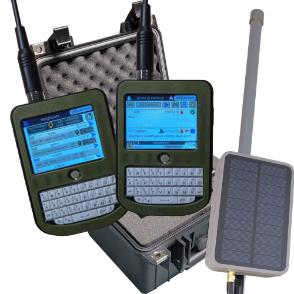

Protocol and firmware
What is Blackout Comms
An off-grid communication, location sharing, and circuit-control mesh. It is mostly LoRa, with MQTT and other transports available. The point is to talk to people around you when there is no cell service, no internet, or no grid at all.
- Independent of cell, internet, and the power grid.
- Local messaging, broadcasts, and location sharing with trusted people.
- A decentralized mesh that plans paths and still keeps payloads private.
- Out-of-range or powered-off devices can receive a message up to 24 hours later.
- Encrypted and digitally signed: asymmetric and symmetric encryption, plus ECDSA.
- Delivery confirmations when a message is actually received.
- Unpredictable frequency hopping, and packet striping across frequencies.

How it started
Development of the protocol, firmware, and early hardware started in late 2023, after repeated and authoritative warnings about grid and communication outages. At the time there was no inexpensive, low-power, text-based system that a non-technical person could set up and actually rely on.
Some options checked one or two of those boxes. Below the surface, most were weak on security, usability, or both. Blackout Comms was written from scratch instead of patching those gaps.
Early designs
Firmware and hardware went through many iterations. Early prototypes used a SAMD51 and a custom PCB built around that platform with an RFM95W transceiver. The focus has since moved entirely to firmware, UI, and protocol. Hardware design is left to LilyGO, Heltec, and others.
Where it is going
Current work is on making the firmware easier for non-technical users, and on sensors and control that matter when the grid is unreliable: secure asynchronous communication, motion detection, and simple automation.
The main product site is chatters.io. Firmware, build PDFs, and platform docs live at offgridcomms.club.